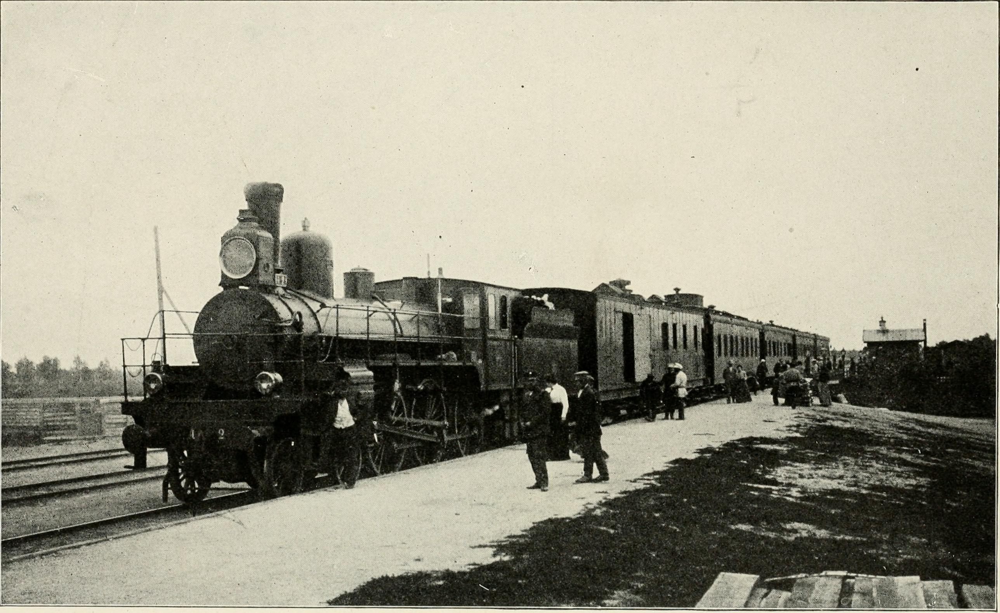
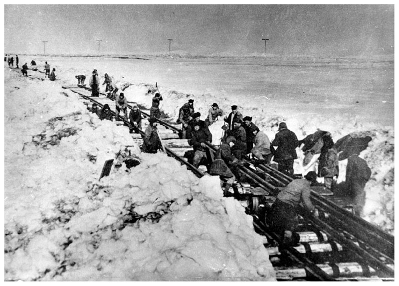
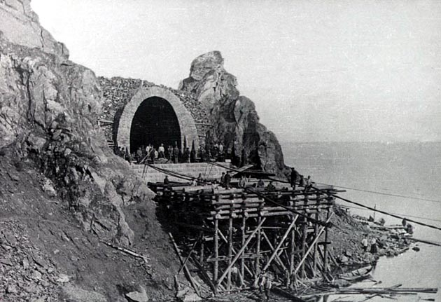
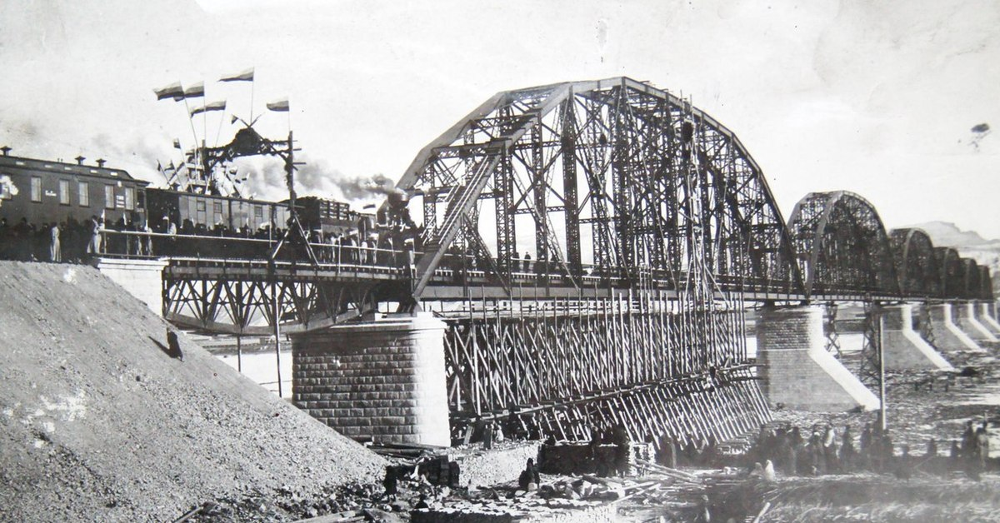
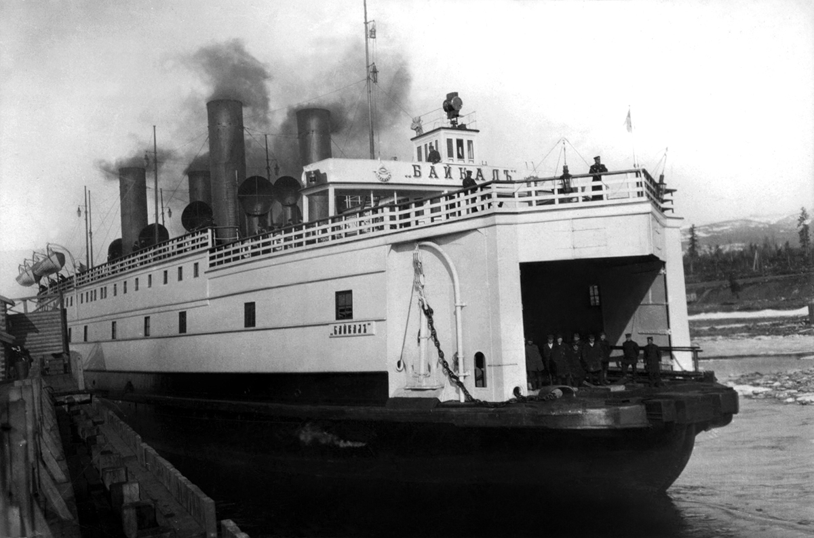
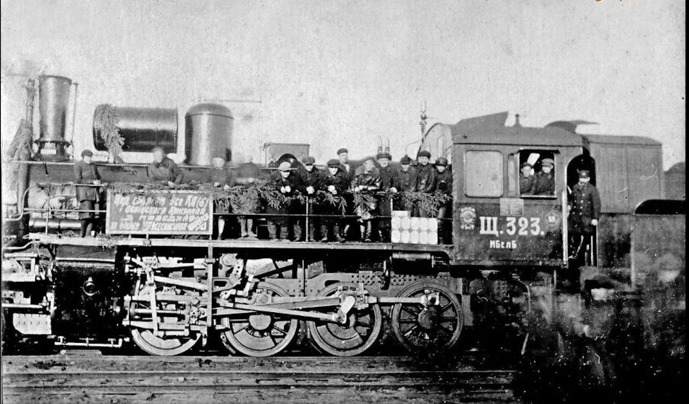
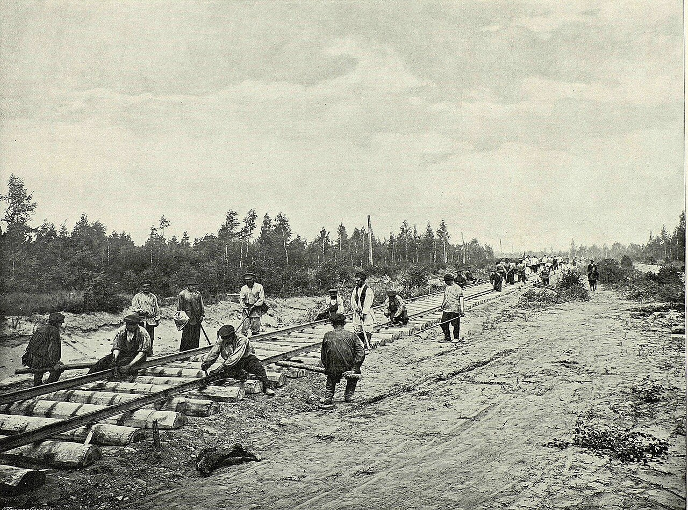
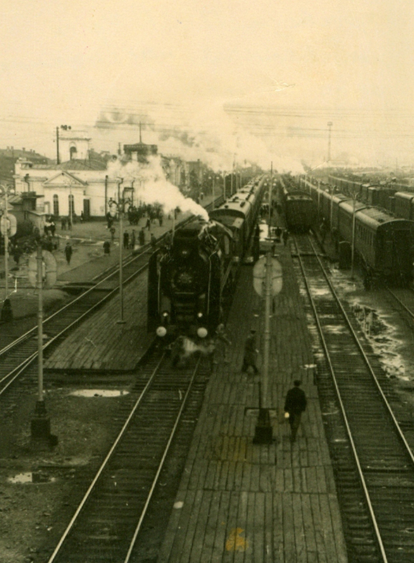
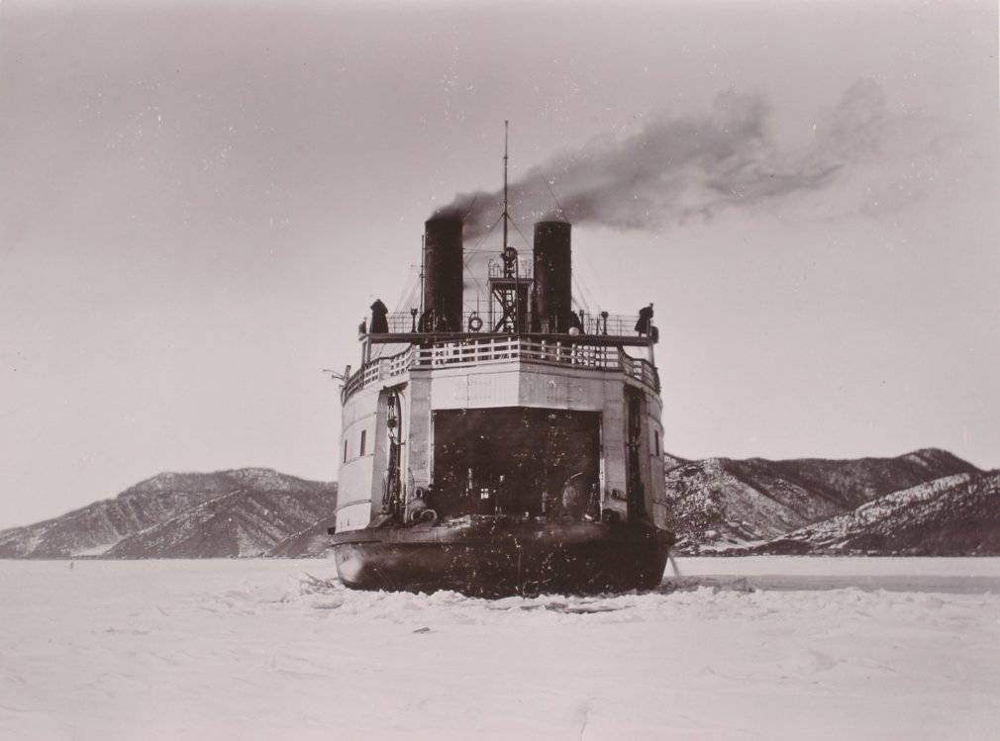

Инженерный подвиг Российской Империи:
История создания Транссиба
К концу XIX века Сибирь — богатейший край страны — оставалась фактически отрезанной от центральной России. Бескрайние пространства к востоку от Урала были лишены нормального сообщения: грузы шли месяцами, а переселение крестьян было сопряжено с огромными лишениями.
Идея грандиозной железнодорожной магистрали зрела давно, однако именно министр финансов Сергей Юльевич Витте придал ей политический и экономический импульс. В 1891 году Высочайшим Рескриптом Александра III строительство было официально объявлено национальным приоритетом. На берегу Тихого океана, близ Владивостока, цесаревич Николай Александрович лично уложил первые символические шпалы и тачку с землёй — так начался этот беспрецедентный проект.
Протяжённость дороги от Челябинска до Владивостока составила более 7 000 вёрст. Если учитывать подъезды от Москвы — 9 298 километров, что делало Транссиб самой длинной железной дорогой мира — рекорд, не побитый по сей день. Строительство велось одновременно с нескольких сторон, при острой нехватке рабочих рук, в условиях дикой природы, вечной мерзлоты и сибирских морозов.
«Постройка Сибирской дороги есть дело, конечно, великое, труднейшее и многосложное — в особенности ввиду естественных препятствий, которые надобно побороть».
Магистраль строилась в несколько этапов: Западно-Сибирский, Средне-Сибирский, Забайкальский, Амурский и Уссурийский участки возводились параллельно. Для ускорения строительства была проложена Китайско-Восточная железная дорога (КВЖД) через территорию Маньчжурии. Лишь после Русско-японской войны 1904–1905 гг. страна взялась за исключительно российский маршрут — через тайгу по берегу Амура.
От Москвы до Тихого океана — 9 298 километров стали нитью, связавшей восток и запад великой страны.
Инженеры Российской Империи столкнулись с препятствиями, не имевшими аналогов в мировой практике.

На протяжении почти трети всей трассы — от Байкала до Владивостока — строители столкнулись с вечномёрзлыми грунтами. Земля промерзала на глубину до нескольких десятков метров и вела себя непредсказуемо: летом превращалась в болото, зимой вздымала полотно, разрывая рельсы. Инженеры были вынуждены изобретать специальные методы укладки балласта, дренажные системы и насыпи, чтобы предотвратить просадку пути. Этот бесценный опыт заложил основы для особой науки — геокриологии.

Кругобайкальская железная дорога — «золотая пряжка» Транссиба — стала настоящим шедевром инженерной мысли. Её прокладка вдоль скалистого южного берега Байкала потребовала строительства 39 тоннелей общей длиной 9 километров, 16 каменных галерей и 248 мостов и виадуков — на 84 км пути. Скальные породы взрывали вручную дробью и чёрным порохом. Каменные порталы тоннелей строились в стиле итальянского ренессанса — след присутствия иностранных специалистов на стройке.

Мост через Енисей в Красноярске, спроектированный инженером Лавром Проскуряковым, стал одним из крупнейших металлических мостов конца XIX века. Его длина составляла 949 метров, а центральный пролёт перекрывал 144 метра стремительного течения. В 1900 году на Всемирной выставке в Париже этот мост был удостоен золотой медали как выдающееся достижение инженерного искусства эпохи. Достаточно могучий, чтобы выстоять против ледяных заторов и весенних разливов знаменитой сибирской реки.

Пока Кругобайкальская дорога ещё строилась, озеро Байкал стало главным препятствием на пути из Иркутска на восток. Разрыв в маршруте длиною 70 км преодолевался с помощью уникального судна — парома-ледокола «Байкал», заказанного в Англии. Корабль перевозил по 28 товарных вагонов за рейс, а в зимнее время, когда лёд достигал полутора метров, прокладывал себе путь стальным носом. В годы Русско-японской войны паром работал в критически важном режиме, обеспечивая снабжение армии на Дальнем Востоке.
Снимки эпохи сохранили для нас лица и пейзажи великой стройки.




Завершение строительства Транссибирской магистрали в 1916 году стало подлинной революцией — не политической, но цивилизационной.
За два с половиной десятилетия строительства дорога изменила Сибирь необратимо. Вдоль путей возникли десятки новых городов и посёлков. Только в период с 1896 по 1914 год в Сибирь переехали более 3,5 миллиона крестьян. Столыпинская реформа опиралась на Транссиб как на главный инструмент аграрной колонизации — и вполне справедливо.
В экономическом отношении дорога открыла путь сибирскому зерну, углю и лесу на рынки западной России и Европы. Экспорт масла из Западной Сибири в 1900-х годах стал настолько значимым, что Дания всерьёз забеспокоилась о конкуренции. Россия внезапно оказалась одним из крупнейших экспортёров сельскохозяйственной продукции в мире.
В военно-стратегическом смысле Транссиб позволил России быстро перебрасывать войска на восточные рубежи. Этот фактор сыграл ключевую роль в обеих мировых войнах и в сохранении огромной территории в составе государства. Именно Транссиб не позволил России потерять Сибирь.
Транссибирская магистраль и сегодня остаётся главной транспортной артерией России. Ежегодно через неё перемещается более 100 миллионов тонн грузов, а поезд Москва–Владивосток по праву считается одним из самых легендарных railway-путешествий мира. Начатая в эпоху паровых машин и ручного труда, она стала символом того, чего может достичь государственная воля в сочетании с человеческим гением.